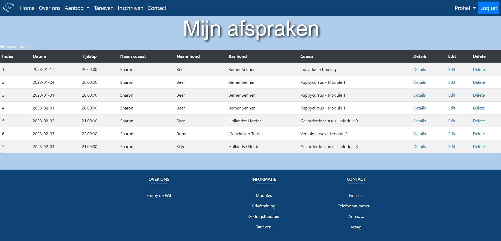

Startproject

Allereerst ben ik op zoek naar een klant gegaan, ik heb iemand gevonden die later een eigen hondenschool wilt beginnen en een reserveringssysteem wil hebben zodat hondeneigenaren zelf hun afspraken kunnen inplannen, ook was het de bedoeling dat er een website omheen werd gebouwd.
Functies
Create
De create pagina is een pagina waarop een user zelf een afspraak kan inplannen. Voor de desbetereffende hondenschool gaat dit om een training of om gedragstherapie aan huis. Alle opties kunnen vanuit de dropdown gekozen worden en er kan een datum en tijd ingevuld worden. Voor de rest moeten er nog enkele persoonlijke gegevens worden ingevuld.
Read 
Op een read pagina, oftewel de index haal je de data uit de database en weergeef je die in een tabel. In dit geval haal ik de afspraken uit de database. Als je ingelogd bent kan je onder Mijn afspraken jouw gemaakte afspraken inzien, hierbij zie je dus alleen de afspraken die gemaakt zijn met het ingelogde account. Echter kan de admin alle afspraken inzien met zijn eigen login.
Update
Met de update pagina kan je de data uit de database updaten. Dit betekent dus dat je de data die opgeslagen staat in de database kan aanpassen. Allereerst wordt in het form de data die in de database is opgeslagen teruggeplaatst waarna je het kan veranderen. Na op de submit knop gedrukt te hebben wordt de nieuwe data naar de database gestuurd en wordt de vorige data vervangen. Dit heb ik in mijn systeem gebruikt voor het aanpassen van de gemaakte afspraken.
Delete
De delete pagina zorgt ervoor dat je afspraken uit het systeem kunt verwijderen. Zodra je op delete klikt wordt je doorgestuurd naar de delete.php file (dit is niet zichtbaar op de website), waarna hij de code doorloopt en vervolgens de afspraak uit de database en uit de afsprakenlijst verwijdert.
Login
Op de website kan je zelf een account aanmaken waar je vervolgens mee kan inloggen om een afspraak te kunnen maken. Alleen als je ingelogd bent kun je daarna je afspraken en je gegevens inzien. Als je ingelogd bent verandert de login knop in de header naar een logout knop en komt daarnaast een dropdown met jouw profiel.
Eindresultaat
Binnenkort is hier de link van de website te vinden!